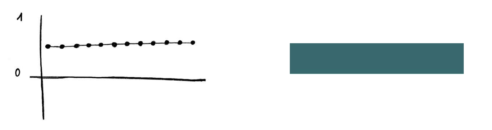
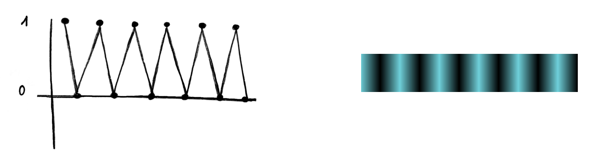
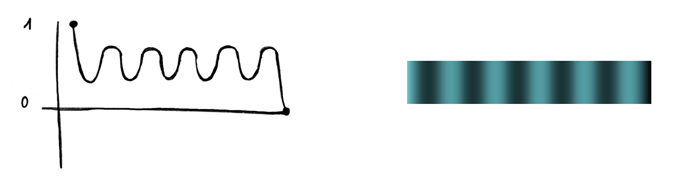
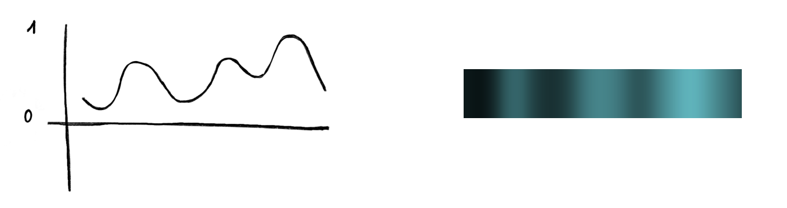
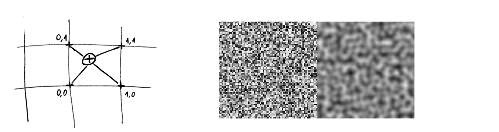

Value noise
Origine
Il value noise è emerso come una tecnica innovativa nel campo della grafica procedurale, sviluppata per risolvere la necessità di generare texture più realistiche. Negli anni ’60 e ’70, durante una fase di rapida evoluzione della grafica computerizzata, ricercatori e sviluppatori esploravano nuove metodologie per migliorare la qualità visiva delle immagini generate al computer. In quel periodo, infatti, le capacità di memoria delle macchine erano limitate, rendendo impossibile l'impiego di immagini di alta risoluzione per il texturing, spingendo così a trovare nuove soluzioni.
Cos'è
Il value noise è quindi un algoritmo essenziale per creare texture e superfici naturali di alta risoluzione. Questa tecnica può generare transizioni graduali tra i valori: l'interpolazione tra i punti crea un effetto visivo fluido e smussato, che imita meglio le caratteristiche naturali rispetto al rumore casuale puro. Il noise può essere generato in diverse dimensioni, 1D, 2D, 3D, ognuna adatta a specifici tipi di applicazioni grafiche.
- 1D (una dimensione), che produce una linea di valori.
- 2D (due dimensioni), che crea una griglia di valori, utilizzata per texture o altri effetti superficiali.
- 3D (tre dimensioni), che forma un volume di valori, spesso impiegato in effetti più complessi come fumo o nuvole.
Noise 1D
L'algoritmo è quindi una funzione matematica utilizzata per generare e gestire dei valori distribuiti in un determinato spazio. Quando il valore del noise si avvicina a 1, il colore risultante assume una luminosità maggiore, tendendo al bianco. Al contrario, quando il valore del noise si avvicina a 0, il colore diventa più scuro, tendendo al nero.
   Noise 2D
Il Value Noise 2D è una tecnica di generazione di rumore procedurale che crea texture naturali su una griglia bidimensionale. Utilizza punti di controllo casuali e interpolazione bilineare per calcolare valori intermedi, producendo transizioni graduali tra i punti. Questo metodo è ideale per simulare superfici come terreni e materiali, generando un rumore visivamente continuo e realistico.
Noise 3D
Il Noise 3D è invece utilizzato per creare texture e modelli volumetrici realistici. In una griglia tridimensionale, utilizza l’interpolazione trilineare tra i valori casuali degli otto punti di controllo più vicini per produrre transizioni fluide e naturali. Questo metodo è ideale per simulare effetti volumetrici come fumo, nebbia e variazioni di densità nei fluidi, offrendo realismo e dettaglio elevato.